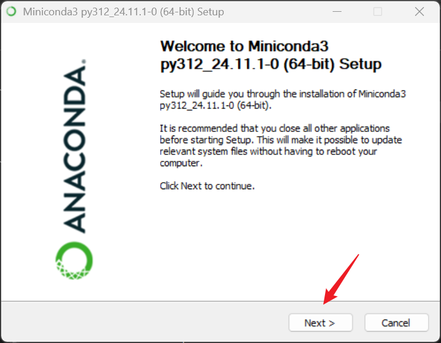
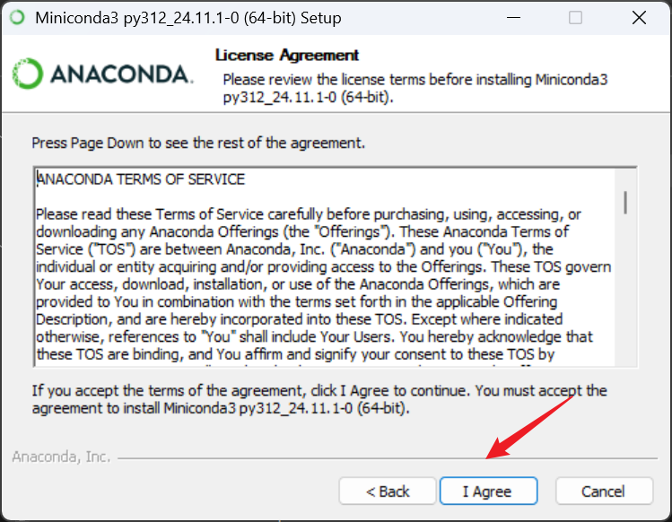
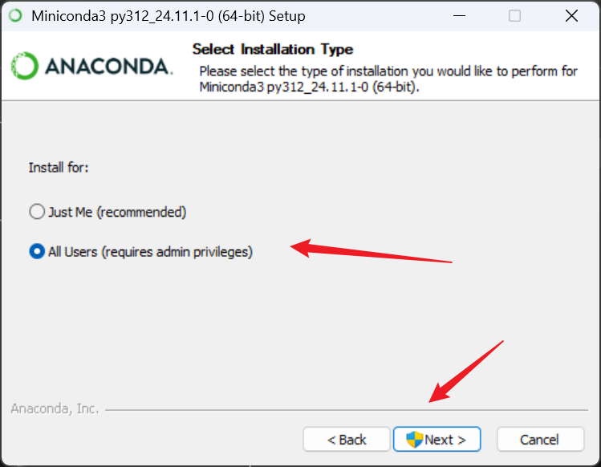
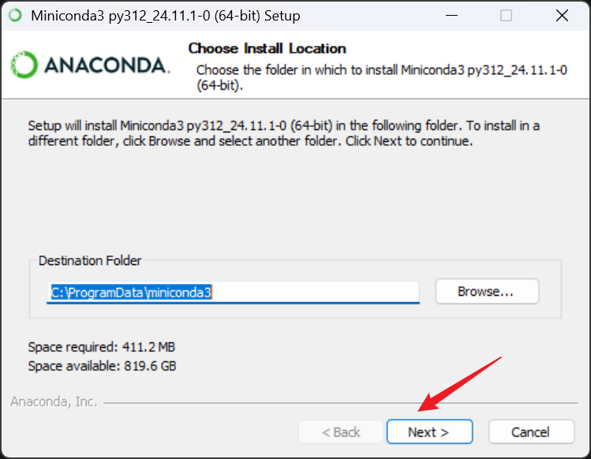
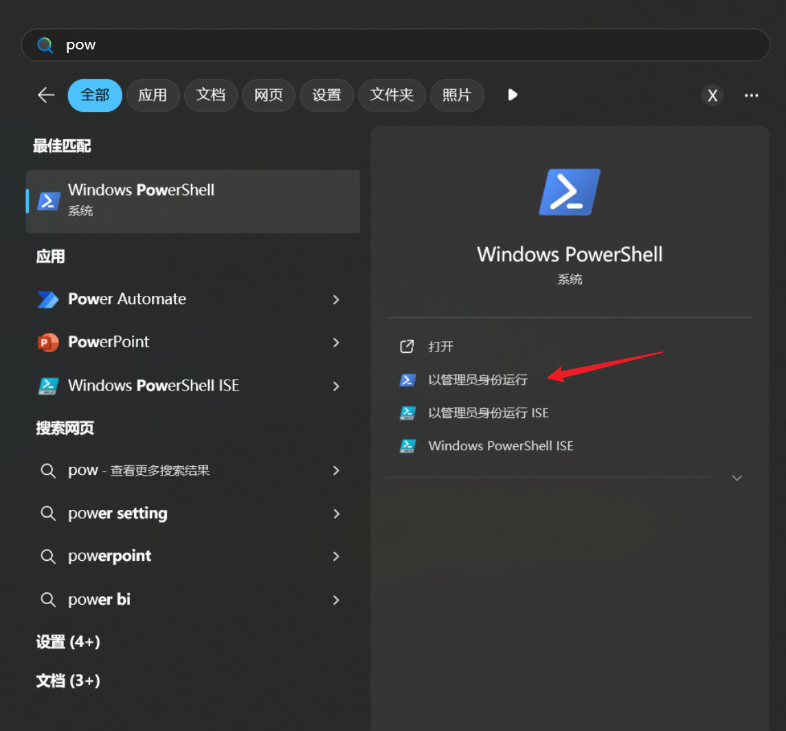
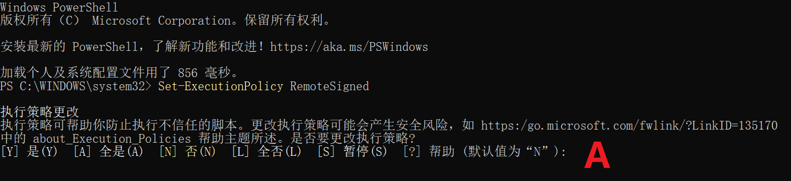

<!DOCTYPE lake>
<h2 data-lake-id="VGglA" id="VGglA"><span data-lake-id="u60708f1c" id="u60708f1c">下载</span></h2><ol list="u885611b1"><li data-lake-id="u1ec943c7" fid="ua2eeafa1" id="u1ec943c7"><span data-lake-id="u3a474eba" id="u3a474eba">打开 </span><code data-lake-id="u794ea3df" id="u794ea3df"><span data-lake-id="u39abd1fd" id="u39abd1fd">powershell</span></code><span data-lake-id="udadf7af3" id="udadf7af3">,输入命令</span></li></ol><span class="yuque-card-unsupported">[codeblock]</span><ol list="u5efc0dd6" start="2"><li data-lake-id="ue263e1a0" fid="u785b18d2" id="ue263e1a0"><span data-lake-id="ud6b1cc5e" id="ud6b1cc5e">下载完成后，输入命令，查看sha值</span></li></ol><span class="yuque-card-unsupported">[codeblock]</span><p data-lake-id="ufec16be4" id="ufec16be4"><span data-lake-id="u029f6bfe" id="u029f6bfe">结果显示</span></p><span class="yuque-card-unsupported">[codeblock]</span><ol list="u340724b7" start="3"><li data-lake-id="uea5f80a7" fid="u9ce40e48" id="uea5f80a7"><span data-lake-id="u6148b597" id="u6148b597">进入网站 </span><a data-lake-id="u29c917d6" href="https://repo.anaconda.com/miniconda/" id="u29c917d6" rel="noopener noreferrer" target="_blank"><span data-lake-id="uf95b5fdd" id="uf95b5fdd">https://repo.anaconda.com/miniconda/</span></a></li></ol><p data-lake-id="uaac9307f" id="uaac9307f"><span data-lake-id="u65b7bb0e" id="u65b7bb0e">比对 网站上的SHA256 和 自己生成的是否一致，不一致，重复第一步，重新下载。</span></p><h2 data-lake-id="p7rGO" id="p7rGO"><span data-lake-id="u0da53bca" id="u0da53bca">安装</span></h2><p data-lake-id="u086631b6" id="u086631b6"><span data-lake-id="ue7f73974" id="ue7f73974">打开  下载目录，双击安装</span></p><p data-lake-id="uc782990f" id="uc782990f"></p><p data-lake-id="u5c007d95" id="u5c007d95"></p><p data-lake-id="uc50974a1" id="uc50974a1"><span data-lake-id="u8581164c" id="u8581164c">配置为</span><strong><span data-lake-id="u303e0491" id="u303e0491">所有用户</span></strong></p><p data-lake-id="ud58abca4" id="ud58abca4"></p><p data-lake-id="u45c685cf" id="u45c685cf"><span data-lake-id="u05538d0d" id="u05538d0d">配置</span><strong><span data-lake-id="u4c4ec150" id="u4c4ec150">安装目录</span></strong></p><p data-lake-id="u6b79a89a" id="u6b79a89a"></p><p data-lake-id="uf257d357" id="uf257d357"><br/></p><h2 data-lake-id="CCcpn" id="CCcpn"><span data-lake-id="u55de689c" id="u55de689c">环境变量配置</span></h2><h3 data-lake-id="OnUOV" id="OnUOV"><span data-lake-id="u4f341cc9" id="u4f341cc9">修改执行代理</span></h3><p data-lake-id="u98b569d6" id="u98b569d6"><span data-lake-id="u7131f4e4" id="u7131f4e4">以管理员身份打开Powershell</span></p><p data-lake-id="u786d0a56" id="u786d0a56"></p><p data-lake-id="u8cc318bf" id="u8cc318bf"><span data-lake-id="uc033f49c" id="uc033f49c">输入</span></p><span class="yuque-card-unsupported">[codeblock]</span><p data-lake-id="u09d2845b" id="u09d2845b"></p><p data-lake-id="uf35d1a38" id="uf35d1a38"><span data-lake-id="u788be69c" id="u788be69c">提示时输入A</span></p><h3 data-lake-id="cRXl3" id="cRXl3"><span data-lake-id="ub2a7c9bd" id="ub2a7c9bd">添加环境变量</span></h3><p data-lake-id="u683a3d0d" id="u683a3d0d"><span data-lake-id="uafbc7540" id="uafbc7540">添加环境变量</span></p><span class="yuque-card-unsupported">[codeblock]</span><p data-lake-id="u5d8f35df" id="u5d8f35df"><code data-lake-id="u3633e7e6" id="u3633e7e6"><strong><span data-lake-id="u14a16f0a" id="u14a16f0a" style="color: #DF2A3F">C:\ProgramData\miniconda3</span></strong></code><strong><span data-lake-id="ue3a0b2e7" id="ue3a0b2e7" style="color: #DF2A3F">为你miniconda3安装目录，如果不同，需要进行修改</span></strong></p><h3 data-lake-id="mnOC0" id="mnOC0"><span data-lake-id="uf4202509" id="uf4202509">测试安装成功</span></h3><p data-lake-id="uc5c5ade1" id="uc5c5ade1"><span data-lake-id="ud02b1e4c" id="ud02b1e4c">重新打开powershell，输入</span></p><span class="yuque-card-unsupported">[codeblock]</span><p data-lake-id="u8341580d" id="u8341580d"><span data-lake-id="u4e934202" id="u4e934202">如果能看到版本信息，说明安装成功</span></p><p data-lake-id="uab1ca235" id="uab1ca235"><span data-lake-id="ue85c40a0" id="ue85c40a0">​</span><br/></p><p data-lake-id="u436fda15" id="u436fda15"><span data-lake-id="u9c6a5f63" id="u9c6a5f63">​</span><br/></p><h2 data-lake-id="zyhtO" id="zyhtO"><span data-lake-id="u23c6b9d5" id="u23c6b9d5">Conda创建环境</span></h2><h3 data-lake-id="f48DJ" id="f48DJ"><span data-lake-id="ua9c81764" id="ua9c81764">查看当前的环境</span></h3><span class="yuque-card-unsupported">[codeblock]</span><h3 data-lake-id="rWn78" id="rWn78"><span data-lake-id="uc67f758f" id="uc67f758f">创建环境</span></h3><span class="yuque-card-unsupported">[codeblock]</span><h3 data-lake-id="K8zSX" id="K8zSX"><span data-lake-id="u35d60066" id="u35d60066">进入环境</span></h3><span class="yuque-card-unsupported">[codeblock]</span><h3 data-lake-id="gjUNR" id="gjUNR"><span data-lake-id="u6276c7e3" id="u6276c7e3">安装依赖</span></h3><span class="yuque-card-unsupported">[codeblock]</span><span class="yuque-card-unsupported">[codeblock]</span>